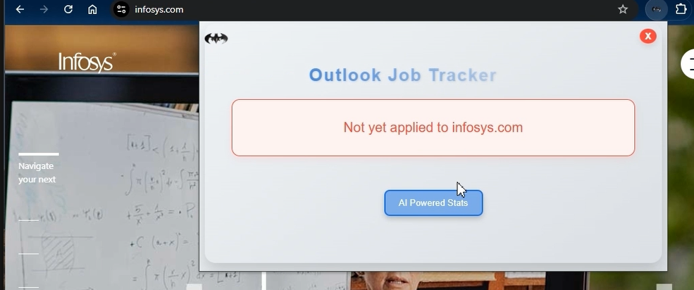
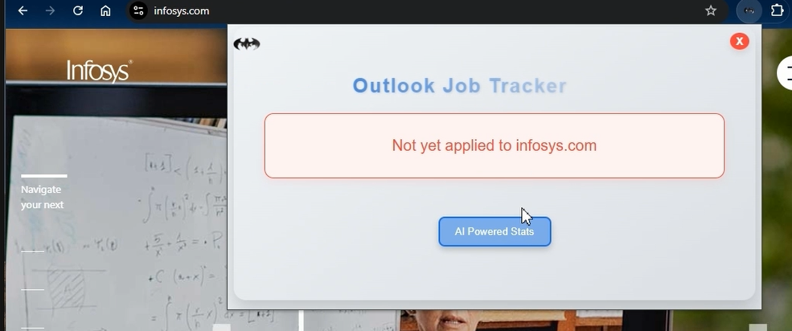

Ai-Powered StackOverflow App
AI-Powered Outlook Job Tracker - A sophisticated Chrome extension integrated that helps users track their job applications intelligently. The system automatically processes Outlook emails to maintain application records and provides real-time notifications when users visit companies they've previously applied to.
The solution is integrated with Gen-AI agents for natural language querying and data visualization.
- Chrome Extension (Frontend) - Real-time company website detection, dynamic popup UI for application status display, and a natural language query interface, providing an interactive data visualization dashboard.
- FastAPI Backend - Features RESTful API endpoints: /check_url for company application status verification and /get_user_query for AI-powered query processing.
- Multi-agent AI system - Includes Agent 1 for query classification and routing, Agent 2 for vector similarity search for company-specific queries, and Agent 3 for text-to-SQL/Graph conversion for analytics.
- Automated Data Pipeline - Utilizes a 24-hour Prefect scheduler for Outlook email data extraction, data cleaning and preprocessing, GPT-powered data processing, PostgreSQL data ingestion, and vector embedding generation.
- Intelligent Company Detection - Automatic detection of company websites, real-time application status notifications, and detailed application history display.
- AI-Powered Analytics - Natural language querying capability, company-specific application insights, statistical analysis and visualization, and vector similarity search for accurate company matching.
- Automated Data Management - Automated email processing, intelligent data categorization, regular database updates, and vector embedding maintenance.
- OpenAI - Utilized AI models including text-davinci-003 and gpt-3.5-turbo for fine-tuned AI models to perform StackAI tasks.
- SentenceTransformer - Leveraged the distilbert-base-nli-stsb-mean-tokens model for semantic textual similarity and embeddings.
- Airflow - Implemented data pipeline automation to orchestrate data workflows efficiently.
- FastAPI - Developed the backend to facilitate API calls between the Streamlit user interface and the AI models.
- Streamlit - Designed the user-friendly front-end interface for user interactions.
- Docker - Utilized Docker for containerization to package the application and its dependencies consistently.
- Terraform - Automated infrastructure provisioning and management on Google Cloud Platform (GCP).
- BigQuery - Served as the data warehouse, specifically for Stack Overflow data storage and retrieval.
- CloudSQL - Implemented a database for storing user credentials and related data.
- Great Expectations - Employed Great Expectations for comprehensive data validation checks to maintain data quality and reliability.
- © Untitled
- Design: HTML5 UP
App Details
App Features

 
